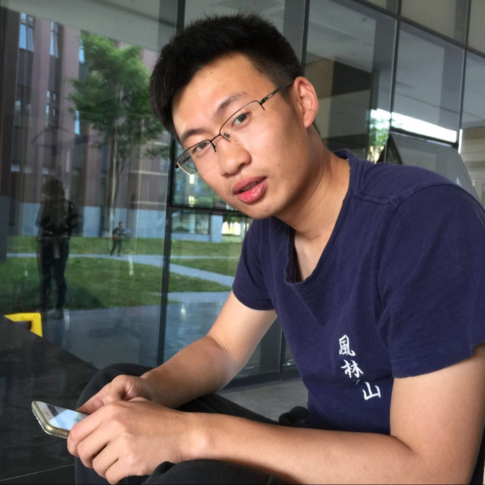

|  | Bo Su (苏博)Master of Electrical and Computer Engineering (ECE), Class of 2021GEORGIA INSTITUTE OF TECHNOLOGY Email: subo@gatech.edu; LinkedIn: Bo Su |
Biography
I am currently pursuing my master degree in the ECE at Georgia Institute of Technology since August 2019.
CV/Resume
My Resume. Looking forward to a full-time job as SDE, available from May 2021Research Interests
My research interest covers Data Analysis, Human-computer Interaction, Augmented Reality.
News
-
2019/04, our journal “PlantMP: a database for moonlighting plant proteins” is accepted by Database Oxford.
Check out the website: https://www.plantmp.com -
2018/10, our poster “Story Teller: A Contextual-based Educational Augmented-Reality Application for Preschool Children” is accepted by UBICOMP/ISWC 2018.
-
2018/08, our paper “Skin Conductance as an In Situ Marker for the Degree of Concentration in a First Person Shooting Training Game: Some Preliminary Findings” is accepted by PRAI 2018.
Publications
* Corresponding Author
Journal
-
PlantMP: a database for moonlighting plant proteins
Bo Su, Zhuang Qian, Tianshu Li, Yuwei Zhou, Aloysius Wong*
In Database The Journal of Biological Database and Curation, April, 2018. [Journal]
Conference Papers
-
Skin Conductance as an In Situ Marker for the Degree of Concentration in a First Person Shooting Training Game: Some Preliminary Findings
Yuxuan Yao, Zhuang Qian, Bo Su, Zhihao Jin,Tiffany Y. Tang*
In ACM PRAI 2018, NJ, USA, 2018. [Paper]
Conference Posters
-
Story Teller: A Contextual-based Educational Augmented-Reality Application for Preschool Children
Bo Su,Pinata Winoto*,Tiffany Y. Tang*
In Proceedings of ACM Ubicomp/ISWC, Singapore, Singapore, 2018. [Paper]